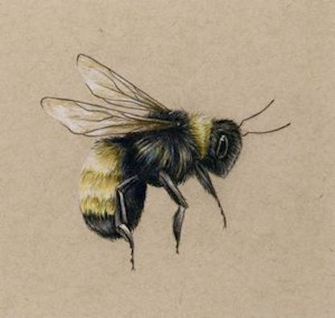

Comprendre comment fonctionne la pollinisation
En pollinisant les plantes, les butineuses contribuent à l’évolution et à la survie de plus de 80 % des espèces végétales. Retour sur le formidable travail qu'effectuent les abeilles en visitant les millions de fleurs. Un dur labeur, indispensable pour obtenir des fruits.